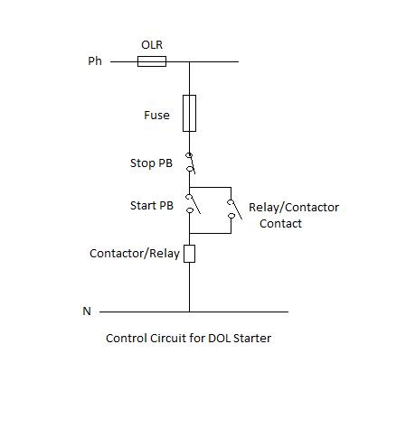

Aim
To Develop a ladder program for DOL starter.
Objective:-
- 1. To understand working of DOL starter
2. Develop a ladder program for starting an electrical motor using DOL starter

Q1.
An electric motor converts
Mechanical energy into electrical energy
Electric energy in mechanical energy
Both a and B
Q2.
---- is a unit to measure the output power of an electric motor
HV
Hz
HP
Q3.
The electric motor consists of
Battery
Magnet
A spark plug
Q4.
The motor armature acts as
a rotor
an axle
a stator
Q5.
For operation of the ….. application electric motor is not required
Refrigerator
Water filter
Mixer

Working of Direct-On-Line (DOL) starter:
One method of starting electric motors is using direct on line (DOL) or across the line starter. In this method full line voltage is applied to the motor terminals. This is simplest type of motor starter. An electrical wiring diagram for single phase DOL starter is shown below.
A DOL motor starter contains fuse and over load relay (OLR) for protection purpose. The starter can be contain momentary contact or maintained contact push buttons. The example considered here is momentary contact push buttons. For starting purpose normally open (NO) push button is preferred whereas normally closed (NC) push button is used to stop the motor.
The excessive supply voltage drop causing high inrush current is the criteria to limit the use of DOL starter. Conveyor motors, water pumps are the applications where DOL starters are used.
Procedure:
Problem Statement: To start a motor using DOL starter .The simple P&I diagram for this problem is as below.

Listing of Input and Output devices:
Inputs: PB1- To start the motor
PB2- To stop the motor
Output: M1- Motor
Sequence of Events :
1. When Start push button (PB1) is pressed, Motor (M1) has to start.
2. If Start pushbutton (PB1) is released and Stop pushbutton (PB2) is not pressed, Motor (M1) should remain on.
3. When Stop push button (PB2 is pressed, Motor (M1) has tol stop.
4. If stop push button is released and start is not pressed (released) motor shouldl remain off.
The Boolean equation to represent this sequence is

The ladder diagram to implement these equations is shown below.

AS the momentary contact push buttons are used here, the condition of PB1 is maintained through contact of coil C1. This contact is called as latching contact.
The same sequence of event can be executed by using latch and unlatch instruction in the following way.

Open the Simulator window as described in the last experiment
-
1. The Latch and unlatch instructions are used for holding the output status.
2. The tag name of latch and unlatch output bit must be same.
3. Once you toggle the input bit for the latch; even if you release it by toggling once again, the output bit remains latched.
4. To unlatch the output you will have to toggle the input bit in the unlatch rung and the output will be de-energised. Execute the following ladder on simulator and observe the output status
You can develop ladder for a DOL “Direct On Line” starter using these instructions.
You can also develop the logic using start and stop push buttons as explained under theory tab
Observe the output status at different input conditions.

Q1.
DOL stands for
Direct on line switch
Digital on line starter
Direct on line starter
Q2.
A DOL motor starter contains---------- for protection purpose.
Over load relay
Relay
Switch
Q3.
For starting of an electric motor ----------is preferred
normally open (NO) push button
normally open (NO) switch
normally closed (NC) push button
Q4.
------------ is the criteria to limit the use of DOL starter
Armature Current
Size of the motor
High inrush current
Q5.
In which of the following applications DOL starter can be used
Conveyor belts
Water pumps
Both a and b

- 1. What is DOL starter?
2. How DOL starter works?
3. Why OLR is used in the control circuit of DOL starter?
4. What is difference between maintained push button and momentary contact push button?
5.What is the difference between Relay and Contactor?

- Gary Dunning, “Introduction Programmable Logic Controllers”, CENGAGE Learning, 3rd Ed., 2006.
- John R. Hackworth, Frederick D. Hackworth Jr., “Programmable Logic Controllers ”, Pearson, 2004.
- W.Bolton, “Programmable Logic Controllers”, Elsevier, 4th Ed., 2006.
- B.L.Theraja,"Electrical Technology "
- Geoffrey Stokes," Handbook of electrical installation practices"
- http://plcbasics.net/
- http://www.plcmanual.com/
- http://literature.rockwellautomation.com/
- http://www.automation.siemens.com/